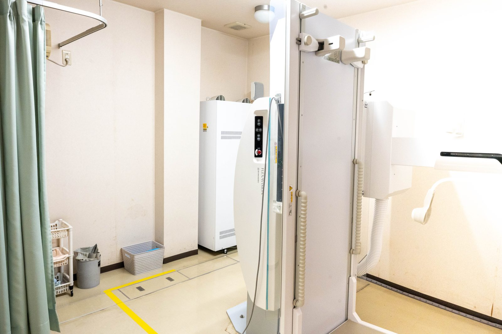

健診の胸のレントゲンで「影がある」と言われました。がんでしょうか？
A. 回答健診の胸部レントゲン（胸部X線）で指摘される異常陰影には、ずっと以前にかかった肺炎や結核などの炎症の跡、血管や肋骨・鎖骨の重なりなど、治療を必要とせず経過観察でよいものも多く含まれるとされています。実際、肺がん検診で「要精密検査」と判定された方のうち、がんが見つかる割合はごく一部と報告されています。ただし、レントゲンの影の見た目だけで原因を見分けることは難しく、中には早めに対応したほうがよいものも含まれます。「たぶん大丈夫だろう」と自己判断せず、一度きちんと確かめておくことが大切です。呼吸器内科でご相談ください。
胸部レントゲンで「影」と言われる主な原因
ひとくちに異常陰影といっても、その正体はさまざまです。一般に、次のようなものが挙げられます。
- 過去の炎症の跡（陳旧性の変化）：以前かかった肺炎や結核などが治ったあとに残る線状・点状の跡です。多くは治療の必要がなく、変化しないかどうかを確認します。
- 血管・骨・乳頭などの重なり：レントゲンは体を平面に写すため、血管や肋骨、鎖骨などが重なって影のように見えることがあります。
- 石灰化した古い病変：カルシウムが沈着して白く写るもので、良性の変化を示唆する所見とされています。
- 良性の腫瘤（しゅりゅう）や嚢胞（のうほう）：がんではないできものが影として写ることがあります。
- 肺炎・結核などの感染症、肺気腫や間質性肺炎などの病気：治療や継続的な管理が必要になる場合があります。
- 肺がん・転移性の病変：頻度としては多くありませんが、見逃さないために精密検査が行われます。
精密検査では何を調べるのですか
影の正体をはっきりさせるために、次の2つが重要とされています。
| 方法 | わかること | ポイント |
|---|---|---|
| 胸部CT検査 | 体を輪切りにした断面画像として、影の位置・大きさ・形・内部の性状を詳しく確認できます | レントゲンでは骨や血管に隠れて見えにくい部分も評価しやすいとされ、精密検査の中心となります |
| 過去の画像との比較 | 同じ影が以前からあったか、大きさや形が変化しているか | 何年も変わらない影は良性の変化であることが多いとされ、比較できると判断の助けになります |
このため、以前に受けた健診の結果や画像（CD-Rなど）が手元にある方は、ぜひお持ちください。比較できるかどうかで、その後の進め方が変わることがあります。
受診の目安
肺の病気は初期には症状が出にくいことがあるため、「症状がないから大丈夫」と判断せず、指摘された内容に応じて受診時期をお考えください。
すぐに受診を検討してください
- 血の混じった痰が出る、または血を吐いた
- 息が苦しい、少し動いただけで息切れがひどくなってきた
- 高熱が続く、強い胸の痛みがある
- 健診の結果に「至急」「早急に受診」といった記載がある
早めの受診をおすすめします
- 結果票に「要精密検査」「要精検」「要医療機関受診」と書かれている
- 症状はまったくないが、今年はじめて影を指摘された
- 咳や痰が2〜3週間以上続いている、体重が減ってきた
- 喫煙歴が長い、または過去に粉じん・アスベストを扱う仕事をしていた
- 去年も指摘されたが、そのままにしている

当院での対応
いなだ医院は呼吸器内科を標榜しており、健診で胸部異常陰影を指摘された方のご相談をお受けしています。まず健診結果を拝見し、症状・喫煙歴・過去の病気やお仕事の内容などをうかがったうえで、胸部レントゲンの再撮影や過去画像との比較を行い、必要に応じて検査や専門医療機関へのご紹介を行います。予約がなくても診療時間内であれば受診いただけます。ご相談自体は10〜20分程度が目安で、保険診療の対象となります（費用の詳細はお問い合わせください）。朝7時から診療しておりますので、お仕事前の時間帯もご利用いただけます。
受診のときにお持ちいただきたいもの
- 健診・人間ドックの結果票（判定と所見が書かれたもの。原本またはコピー）
- 過去の健診結果や画像データ（CD-R、他院からの紹介状や報告書があれば）
- 健康保険証（マイナ保険証）、お薬手帳
- 喫煙歴（何歳から何本くらいを何年間か）、これまでにかかった肺の病気のメモ
参考にした情報
「影がある」と言われて気になっている方は、結果票をお持ちのうえお気軽にご相談ください。
最終更新：2026年8月26日